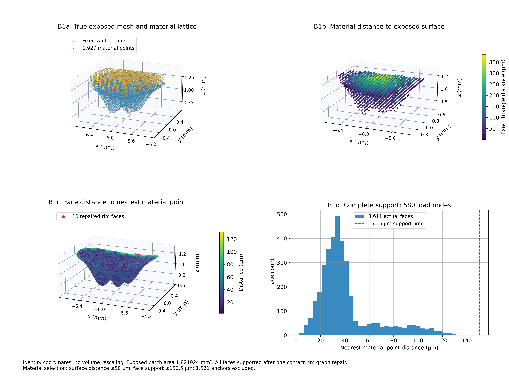
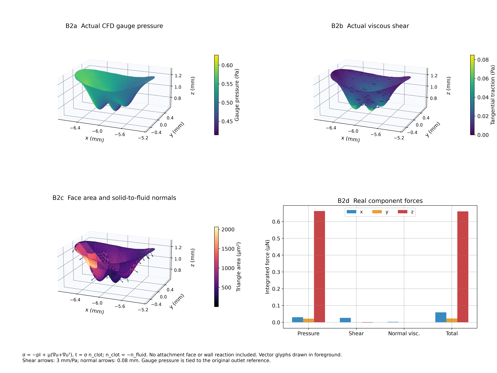
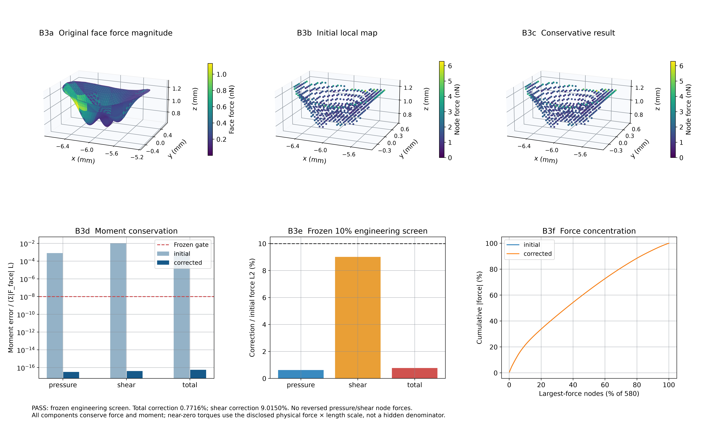
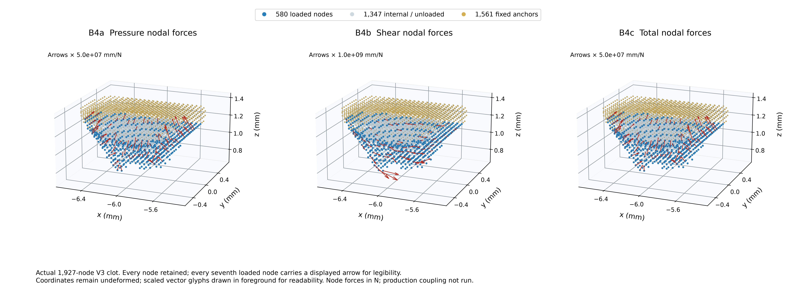

B · 含栓 CFD 到真实材料点的守恒载荷
Run 20261011T184653Z · 真实数组绘图 · 离线工程与研究结论分项验收 · 未运行新断裂/CFD
REVIEW_Y_CLOT_CFD_TO_LAMMPS_CONSERVATIVE_TRACTION_MAP_V1.md
FINAL_STATUS.json
LOCAL_MAPPING_QUALITY.json
CONSERVATIVE_MAPPING_AUDIT.json
INDEPENDENT_VERIFICATION.json
CLOT_NODAL_TRACTION_FORCES.npz
CLOT_NODAL_TRACTION_METADATA.json
CFD_TO_LAMMPS_MAPPING_MATRIX.npz
B1_geometry_and_support

SVG
B2_native_surface_tractions

SVG
B3_conservation_and_local_quality

SVG
B4_material_point_loading

SVG